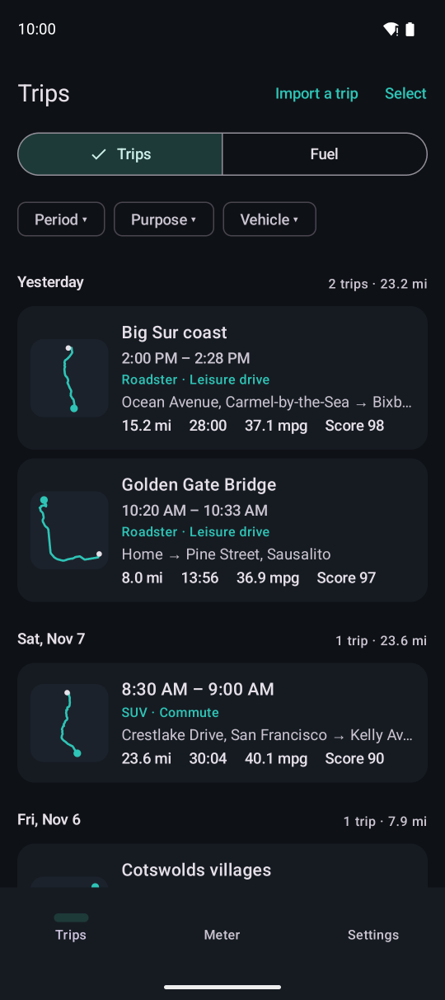
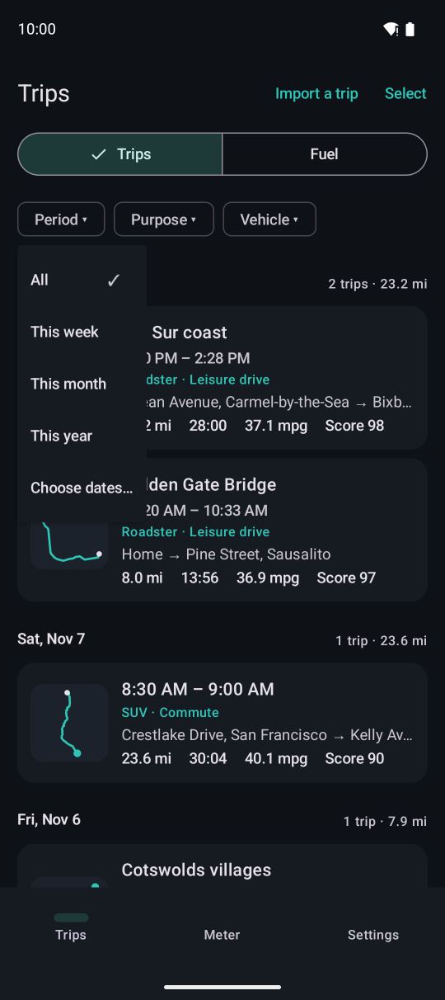
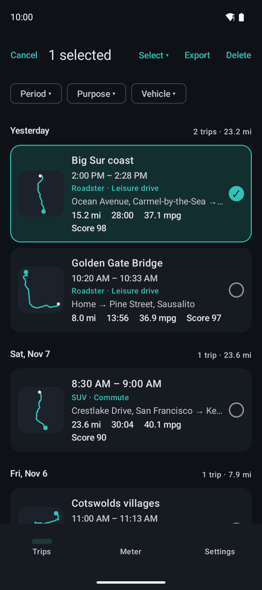

Trips
Your recorded trips, grouped by day. Tap a trip to open its details and replay.

12345- 1Switch between trips and the fuel log
- 2Filters (period, purpose, vehicle and more)
- 3A trip: route thumbnail, times, vehicle and purpose, start and end, distance, time, fuel economy, driving score and costs
- 4Import a trip sent from another device (CarReplotter format)
- 5Select trips to export or delete them together

Filter by period (this week, month, year or a custom range). Period filters are a Premium feature.

Selection mode. Export the selected trips as CSV (one row per trip, handy for expense reports) or delete them.
Start and end points are shown as addresses. Save places such as home to show their names instead; the app does not look up addresses near saved places (“Save as place” in trip details, or Settings → Places & addresses).
Turn on “Record the weather on trips” in Settings → Places & addresses to see the weather at the start, breaks and end, such as “☀️→☁️” (trip details also show the temperature).
The free plan shows your 10 most recent trips. Older trips are kept and all of them appear again with Premium.